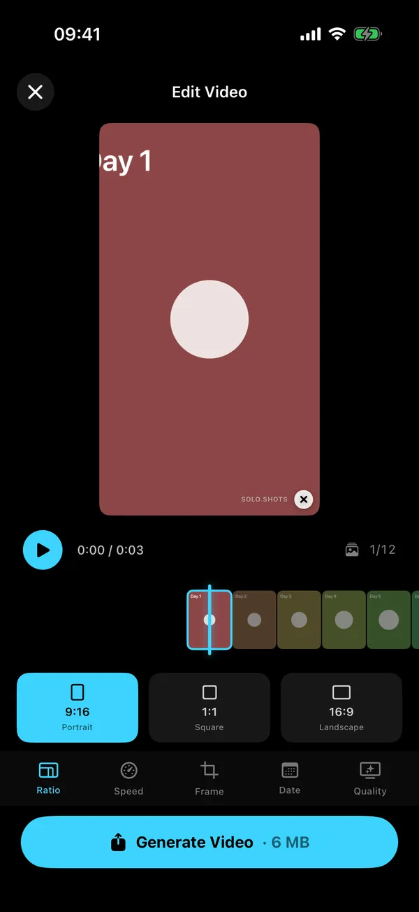

Guide · How-to
How to make a timelapse from photos on iPhone
Not the Camera's Time-lapse mode: this is for photos taken days, weeks or years apart, like a bump, a beard, a plant or a kid.
Quick answer
The Camera app's Time-lapse mode records one continuous video while your iPhone stays still, so it can't combine photos taken on different days. To make a timelapse from separate photos, put them in date order, line them up and show each one for a fraction of a second. You can do it by hand in iMovie, loosely with a Photos memory movie, or with a progress-photo app that lines the photos up and renders the video for you.
Can the iPhone Camera make a timelapse from photos?
No. Time-lapse mode captures footage at intervals while the iPhone sits on a stable surface or a tripod. Apple's examples are a setting sun or traffic flowing: perfect for an afternoon, useless for a bump over forty weeks. Photos taken days apart need a different route.
What are my options for photos taken days apart?
Three, depending on how many photos you have and whether they need lining up.
| Method | Lines photos up? | Effort | Cost | Best for |
|---|---|---|---|---|
| iMovie | No | High: add, trim and order every photo | Free | 10 to 20 photos, full manual control |
| Photos memory movie | No | Low | Free, built in | A music montage of moments |
| Solo.Shots | While you shoot (ghost and level); automatically on the eyes for photos already in your library | Low | Free with ads; Premium optional | One subject, many photos |
How do I make a photo timelapse in iMovie?
Add the photos in date order, shorten each one and switch off the zoom effect. It works, but it's manual.
- In Photos, put the pictures in an album, oldest first.
- In iMovie, start a new Movie project and add the photos.
- Each photo appears for 3 to 6 seconds by default, with a Ken Burns zoom. Tap each photo, drag the trim handles to shorten it, and turn the Ken Burns effect off so the frame stays still.
- Set the transitions between photos to none, so they cut instead of dissolving.
- Share and save the video.
Fine for a dozen photos. For 52 or 365, your thumb will file a complaint. And nothing gets lined up for you, so any drift in your photos shows.
Can Apple Photos make it automatically?
Sort of. Photos can play any album or collection as a memory movie set to music: open it in Collections and tap the play button. You can then change the music, the length and the photos; the exact buttons vary by iOS version. It's lovely for moments set to music, but it's a slideshow: no alignment, so it isn't built for watching one thing change frame by frame.
How do I make a timelapse with Solo.Shots?
Two routes, depending on whether the photos already exist.
Photos you take from now on
Create a daily, weekly or monthly project and take each photo with the Photo Ghost and the level, so they line up from the start. When you're ready (two photos is the minimum), open the project and tap play:
- Ratio: 9:16 portrait, 1:1 square or 16:9 landscape.
- Speed: 0.1 s (fast) to 1 s (slow) per photo; the default 0.25 s is about 4 photos per second.
- Frame: Fill crops to fill the screen; Fit shows the whole photo with bars.
- Date: none, the date, a day number or a week number.
- Quality: 1080p, or 4K.
- Tap Generate Video, then save it to Photos or share it.


Photos you already have
If the photos are of a person or a pet, Timelapse From Your Photos finds them across your library, keeps one clear photo per period and lines every frame up on the eyes, on your iPhone. Importing any other photos into a project is a Premium feature.
How long will my timelapse be?
Number of photos × seconds per photo. That's it.
| Photos | 0.1 s | 0.25 s (default) | 0.5 s | 1 s |
|---|---|---|---|---|
| 30 a month, daily | 3 s | 7.5 s | 15 s | 30 s |
| 40 pregnancy, weekly | 4 s | 10 s | 20 s | 40 s |
| 52 a year, weekly | 5.2 s | 13 s | 26 s | 52 s |
| 100 free version's maximum | 10 s | 25 s | 50 s | 1 min 40 s |
| 365 a year, daily (Premium) | 36.5 s | 1 min 31 s | 3 min 3 s | 6 min 5 s |
Slow changes (a plant, a bump) read better around 0.4 to 0.5 s per photo; fast series like a daily selfie can run at 0.1 to 0.2 s. The free version holds up to 100 photos per project; a daily year needs Premium.
Which aspect ratio should I choose?
- 9:16 portrait: Reels, TikTok, YouTube Shorts and Stories.
- 1:1 square: feeds and family chats.
- 16:9 landscape: YouTube, the TV, a slideshow at a party.
Posting it regularly? The weekly posting system for creators helps, and DUMP turns your best frames into a carousel if a video isn't the right format.
Should I add a date or a day number?
- Date: real calendar dates. Best for kids, pregnancy and anything people will ask "when was that?" about.
- Day: days since your first photo. Great for challenges ("Day 30").
- Week: weeks since your first photo, for weekly projects. It's not a pregnancy week unless you started at week 1.
- None: the clean look.
Why does my timelapse look jumpy, and how do I fix it?
Almost always it's the photos, not the video settings: the framing or the brightness jumps between frames.
- Framing jumps: use the ghost of your first photo, tape marks and the same lens. The line-up guide covers distance, height and tilt.
- Brightness flickers: same light, same time of day, and lock focus and exposure.
- Too fast to follow: slow it to 0.4 or 0.5 seconds per photo.
- One odd photo: hide it. Hidden photos are left out of the video, the streak and the progress count.
FAQ
Can I make a timelapse from photos for free?
Yes. iMovie is free if you don't mind setting up each photo by hand. Solo.Shots' free version exports 1080p video after a short ad, with a small watermark, and lets you export in 4K once (a short ad unlocks it).
What kind of file does Solo.Shots export?
An MP4 video (H.264) in 1080p or 4K, which you can save to Photos or share straight to another app.
Can I use photos that are already on my iPhone?
Yes. Timelapse From Your Photos finds you, someone else or a cat or dog across your library and lines the frames up on the eyes; saving the result needs Premium. Importing other photos into a project is also a Premium feature.
Does it work on iPad?
Yes. Solo.Shots is a universal app for iPhone and iPad and needs iOS or iPadOS 17.6 or later.
Sources
- Apple Support: Record a video with your iPhone camera (Time-lapse) (checked 15 Oct 2026)
- Apple Support: Add video clips and photos in iMovie on iPhone (3 to 6 seconds per photo; checked 15 Oct 2026)
- Apple Support: Adjust zoom effects in iMovie on iPhone (Ken Burns) (checked 15 Oct 2026)
- Apple Support: View your memories in Photos on iPhone (checked 16 Oct 2026)
- Apple Support: Play memory movies in Photos on iPhone (any album or collection plays as a memory movie; checked 16 Oct 2026)
- Apple Support: Personalize your memory movies in Photos on iPhone (change songs, length and photos; checked 16 Oct 2026)